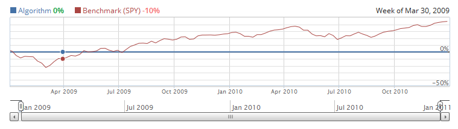
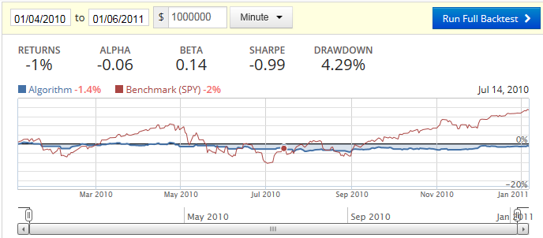
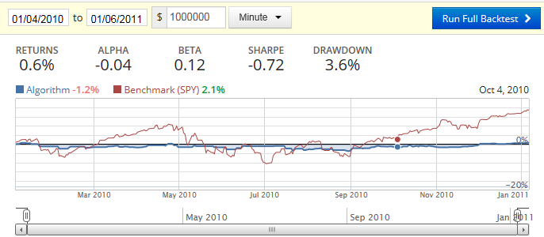
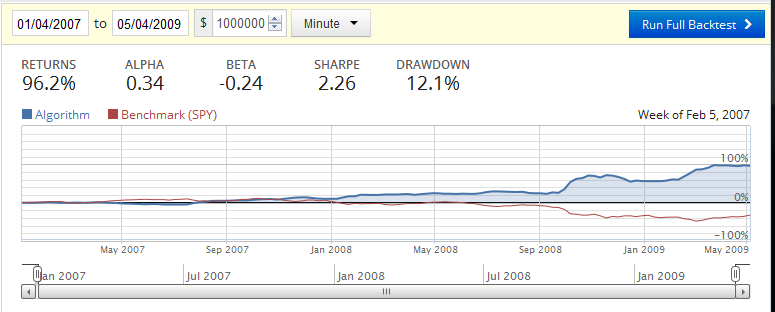
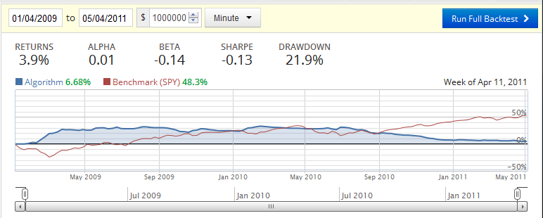

The stock market provides the opportunity for individual investors to buy into corporations that they believe have value and will increase in value over time. Additionally it provides a means for corporations to generate revenue for their needs. There are many different ways of gauging a corporations value, so the market provides opportunities for people to buy and sell shares of corporations stock according to their beliefs about the value of that company. Some people buy and sell stocks based on economic fundamentals, some base decisions on technical analysis, and others base decisions on other factors.
The use of computer algorithms to make trading decisions has increased over time. Large banks and other institutions employ algorithms for trading and issuing trade signals from these programs. They take advantage of market movement for generating profit.
Individual investors are also able to participate in the buying and selling of stocks. There are a multitude of providers that allow individuals to buy and sell stocks and employ their investment strategies. Some of these providers enable the use of programmatic buying and selling of stocks. This opens up the playing field of algorithmic trading to anyone interested.
Within technical analysis there are many different ways of looking at stock data to make trading decisions. One of the initial decisions to make is what time frame to look at and what information to display for that specific time frame. Some common time frames include one minute charts, five minute, fifteen minute, hourly, 4 hour, and daily. During the chosen time frame the stock price generally fluctuates. One common way to capture and display this information is with a candlestick. A candlestick, as the name implies, is a figure that resembles a candlestick. The figure consists of a thicker body and a wick at the top and bottom. The thick body contains the open and close price and the wicks show the high and low for that time period.
The Japanese rice traders were the first traders to use candlesticks. They discovered that the candles could capture what investor sentiment was for the given time period. Certain candlestick patterns gave a good probability that the market would move in a specific direction. These patterns were then used as signals to enter the market, add to positions, or to exit the market. Most candlestick patterns are composed of no more than three candlesticks. Therefore in this project three candlesticks will be used as inputs to the Neural Network.
The stock market commonly uses a number of terms to describe the direction the market is going. If the market is heading up, it is referred to as a bull market. If it's heading down it's a bear market. If it's moving to the side within a range it's a ranging market or sideways market. When a position is taken to take advantage of a bull market (buy low sell high) a 'long' position is taken. When a position is taken to take advantage of a bear market (sell high buy low) a 'short' position is taken.
The objective of this project is to feed candlestick information into a neural network and make trades based on the output.
Artificial Intelligence provides many different tools for solving complex problems. This project is focused applying Neural Networks (NN) to learn, identify, and act upon patterns discovered in the stock market to automate trades. The goal is to have a trading algorithm that will match the historical average return of the stock market through all market conditions.
This project employs the use of AI algorithms, Neural Networks specifically, for identifying patterns in the stock market and entering and exiting positions based on those trends.
One method of interpreting sentiment and predicting future market action in the stock market is using candlestick patterns. Candlesticks were first used by Japanese rice traders. The theory behind candlesticks is that they capture, in real time, the current sentiment and beliefs of all market participants.
This paper looks at marrying candlestick patterns with Neural Networks to identify patterns resulting in profitable trades. Coding for this project is done in Python in the Quantopian environment. Quantopian provides a platform for developing trading algorithms, back testing those algorithms, and comparing algorithmic results against market performance.
Developing the ability to employ trading algorithms is important for the investor that wants to take control of a portion of their own portfolio. This is especially true if the developed algorithm is able to identify and take advantage of short positions. If one looks back to the stock market crash in 2008-2009, many portfolios lost a significant amount of money during those months. If one had developed an algorithm that was able to identify and take advantage of short opportunities, however, that portfolio could have actually increased in value or at least maintained its value during the crash as opposed to losing a significant portion of its value.
This project is important for this very reason. To allow a portfolio to take advantage of all market conditions and to protect, at least a portion of, one's retirement. If another market crash was to take place, I would prefer to have means in place to protect what has been earned through hard work. In my mind, this is an extremely motivating reason to pursue and find a successful trading algorithm.
One of the design issues with a Neural Network is selecting inputs that the Neural Net will be able to easily work with to find patterns. When looking at the stock prices associated with each candlestick, it's apparent that over time prices can change significantly. Additionally, if the NN is applied to other stocks, those prices can vary significantly from the initial training set. In order to help reduce the complexity of training, the candlestick inputs to the NN were encoded as a binary value. The encoding consists of comparing each value composing one candlestick with each value of another candlestick. For example the 'Open' of candlestick one is compared with the 'Open', 'High', 'Low', and 'Close' of the next candlestick. Each comparison is encoded into a binary value where 1 signifies that the 'Open' of candlestick one is higher in value than the prices in candlestick 2. A 0 signifies that the value in candlestick one is lower than the value in candlestick 2.
For generating these binary values candlestick 1 is compared to candlestick 2, candlestick 2 is compared to candlestick 3, and then candlestick 1 is compared to candlestick 3. When each value in the three different candlesticks is compared with the others, the input vector expands to 48 binary values. This captures all possible combinations of relative prices between three candlesticks.
For the initial design with 48 inputs to the NN the following results were obtained. This implementation had the potential of opening a trade at the beginning of the day. If a trade was opened, then it was closed right before the market closed.

As can be seen above, the results are less than awe inspiring. A closer inspection to the actual trades reveals a near random selection of trades. More work needed to be done to create a successful trading algorithm.
Not all candlestick patterns are equally important all of the time. One example if a candlestick pattern is a Bearish Engulfing Pattern. This pattern consists of two candlesticks followed by a large bearish candlestick that engulfs the bodies of the previous two. This can be a signal that the market is turning and may be a good entry point for a sell trade. The problem however, is that if a particular bull trend is still early in its development, the pattern may show up, but may be just part of a temporary pull back. For this reason adding some additional information to the input vector such as overbought/oversold values can add important context for the Neural Network to base its decision on. For this reason additional binary inputs were added to signify overbought and oversold conditions.
In addition to adding to stochastic inputs, binary values representing the ADX (Average Directional Index) were added as well. The ADX is an indicator that is supposed to show whether a security is trending or not. The ADX ranges between 0-100. When it is less than 20 the security is generally ranging. When it is greater than 20 the security is believed to be trending. It doesn't specify whether the trend is bullish or bearish. The input to the NN is binary, where 1 indicates a value greater than 20 and 0 indicates values less than 20.

From the image above we can see that the results of adding in the ADX and Stochastic information didn't help out much with the day trading approach. Something more needed to be done.
The initial design for this NN was to do day trades only. This consisted of running the NN and, based on the results, deciding whether to initiate a buy trade, sell trade, or do nothing. The trade was then closed at the end of the trading day. Overall this approach (as seen above) produced lousy results. The problem is that candlesticks indicate good probability direction for the market in the upcoming days, but the direction isn't necessarily achieved that same day. Consequently, while some of the trade signals were good in the long run, they weren't profitable for such a short time frame.
To improve the performance of the trading system several changes needed to be made in terms of trade duration, 'reward' calculation, and trade management/position closing. One approach to managing trades is to use a trailing stop. An approach that some traders use is to watch the 9 exponential moving average (EMA). When a security crosses the EMA and closes on the other side, that is a signal that the trend could be at an end and that it's a good time to take profit.
For this implementation the 9 EMA was used as the trailing stop. When generating the training vector, the input vector was created and then an algorithm looked into the future to determine what reward would be achieved by taking a long trade and then by taking a short trade. The trade that was the most profitable was determined and used as the 'reward' for the training set. Initially only one output was generated from the NN. The output ranged between -1 and +1. The closer to +1, the more profitable the bullish/long trade. The closer to -1, the more profitable the bearish/short trade. The closer to zero the more neutral the trade and the better to not enter a position in the market. After some testing it was decided to switch the NN to generate three outputs. One output each for long, short, and neutral predictions. The closer to +1 the better the trade and the closer to -1 the poorer the trade.
At this point a decision was made with regard to the training. In general, a NN can be trained to accomplish a specific task. The task that this NN was to perform was to identify the ideal market entry conditions. In order to accomplish this task, it was decided that when a training input was identified that produced a significant return, all of the candles following the entry that were part of the trade were to be skipped. Once the trade closed, each subsequent candle would be considered and entered as part of the training. This way the high quality entry points would be emphasized over and over to the training set. Additionally, the poor entry points would be emphasized and trained into the NN.
The training/testing period chosen for this enhancement included the years surrounding the market crash at the end of 2008. As may be seen from the figure below, the trading algorithm did very well in dealing with these market conditions! In the following plot 100% of available capital was used for each trade. While this was fun for presentation purposes, in the real world a much more conservative use of capital would likely be used.

While the time period from 2007-2009 provided some awe inspiring results, more temperate markets have a different outcome. Following the crash at the end of 2008 and beginning of 2009, the stock market started a long recovery. From the following plot one can see that the NN results aren't nearly as spectacular as during the crash.

The NN seems to struggle with the slow steady upward trend. This is likely due to the slower nature of bull markets. Bull markets tend to move up slowly with relatively frequent pauses and minor pull backs. These pauses and pull backs tend to cause the algorithm to exit trades before the trend is really over. Additional work will have to be done in order to optimize the algorithm for non-catastrophic markets.
If one anticipates a cataclysm in the markets any time soon however, this algorithm may be handy to have in one's repertoire.